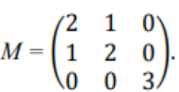

O que é?
Determinante é uma forma de representar uma matriz por apenas um número. Porém, isso só pode ser fieto em raizes quadradas (matrizes que apresentam mesmo número de linhas e colunas). Podemos representar um determinante colocando a matriz entre | | ou det(A).
Determinante de uma matriz 1x1
A determinante de uma matriz 1x1 é o número da matriz. Ex:
Determinante de uma matriz 2x2
Para matrizes 2x2 o determinante é o produto dos elementos da diagonal principal menos o produto da diagonal secundária. Ex:
Determinante de uma matriz 3x3
Agora as coisas complicam um pouco, para calcularmos uma matriz 3x3 precisamos de um pouco mais de trabalho. Primeiro, devemos repetir as duas primeiras colunas à direita da matriz. Depois, devemos multiplicar os elementos da diagonal principal (eaquerda para direita) e somar os resultados. Por fim, devemos multiplicar os elementos da diagonal secundária (direita para esquerda) e somar os resultados, depois fazemos o resultado da diagonal principal menos o da secundária. Ex:
Fonte: https://matematicabasica.net/matrizes-e-determinantes/
Exemplo:

Fonte: https://www.youtube.com/watch?v=vnZtkgwUpzo
Matrizes maiores que 3x3
Aqui é o ponto mais complicado dessa matéria. Para calcular os determinantes de matrizes 4x4, 5x5, etc... Devemos usar a Regra de Chió, que consiste em: Deixar o primeiro elemento da matriz (a11) valendo um, traçar um risco horizontal e vertical, como se estivessimos colocando os elementos da primeira linha e coluna em evidencia e, por fim, fazer o número de dentro da matriz 3x3 criada menos o produto do numero de cima da coluna pelo do lado da linha. Ex:
Depois disso, basta calcular o determinante da matriz 3x3 criada.
1ª Coluna da 4x4
Caso a primeira coluna da matriz 4x4 seja diferente de 1, podemos dividi-la por um número que a torne igual a 1, ou substitui-la por outra coluna (ao lado) que tenha o primeiro elemento igual a 1. Caso optarmos por dividir, devemos multiplicar o determinante pelo numero dividido, caso tenhamos substituido as colunas devemos alterar o sinal.
Propriedades dos determinantes
1. Quando temos uma fila (linha ou coluna) zerada numa matriz, seu determinante será zero.
2. Quando temos duas filas paralelas iguais numa matriz, seu determinante será zero.
3. Quando temos duas filas paralelas proporcionais numa matriz, seu determinante será zero
4. O determinante de uma matriz M e de sua transposta ùëÄùëá são iguais. det(A) = det(A·µó).
5. Se uma linha ou coluna for multiplicada por um escalar k, o determinante é multiplicado por k.
6. Se multiplicamos toda uma matriz de ordem ùëõ por ùëò, o determinante da nova matriz ficará multiplicado por ùëò‚Åø.
7. Se uma linha ou coluna for movida o determinante muda o sinal.
8. Sendo A e B duas matrizes quadradas de mesma ordem e AB o seu produto, o determinante de AB será igual ao produto dos determinantes de A e B. det(AB) = det(A) × det(B).
9. O determinante de uma matriz triangular é o produto dos elementos da diagonal principal.
Questões
(JVL Concursos) Seja a matriz M, determine seu determinante.
Questão 2
Determine o determinante da matriz D:
Questão 3
(FGV 2022) Seja A uma matriz 4x4 cujo determinante é igual a 2. O determinante da matriz 3A é igual a:
>>Reflexão
>>Página de Conteúdos